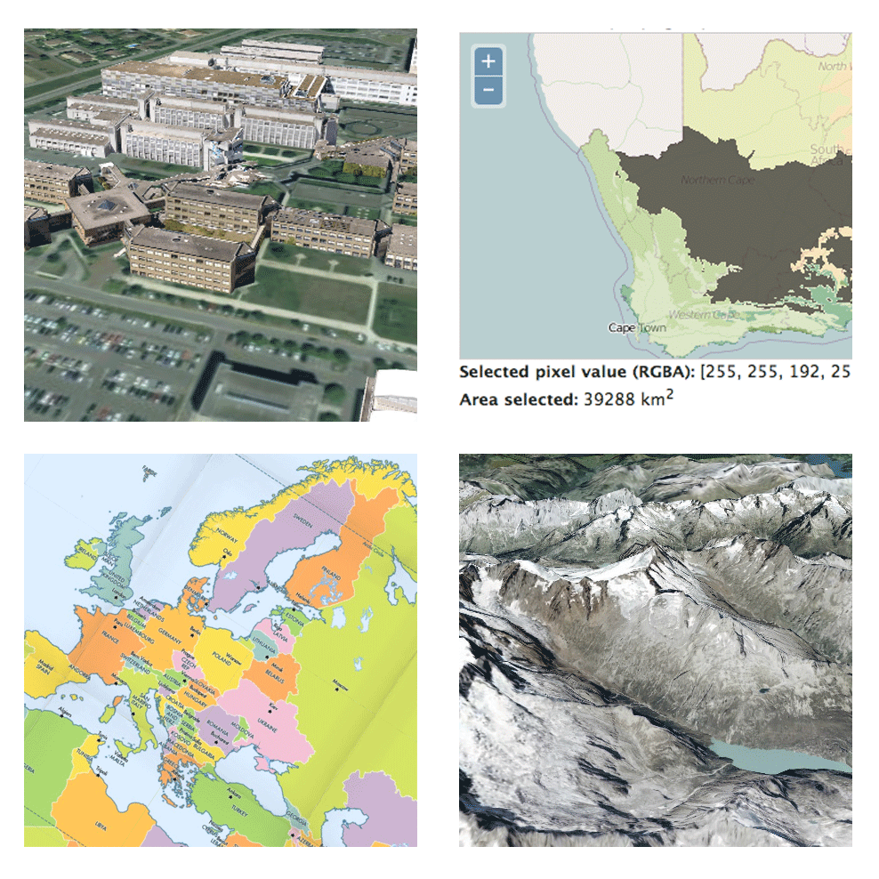

(and don't forget the new zoom control)
Zoom controlPreviously:
var map = new OpenLayers.Map("map", {
projection: new OpenLayers.Projection(
"EPSG:900913"
),
maxExtent: new OpenLayers.Bounds(
-20037508, -20037508,
20037508, 20037508
),
maxResolution: 156543.0339,
units: "m"
});
map.setCenter(new OpenLayers.LonLat(0, 0), 1);
Now:
var map = new OpenLayers.Map({
div: "map",
projection: "EPSG:900913",
center: [0, 0],
zoom: 1
});
Simplified constructors plus sensible defaults.
The OpenLayers APIs have improved. We want and can do better!
E.g. Projection-aware Location and Bounds
requestAnimationFrame for animations (when available)Basically performance optimizations
Ongoing discussion about Canvas, WebGL, and more.
